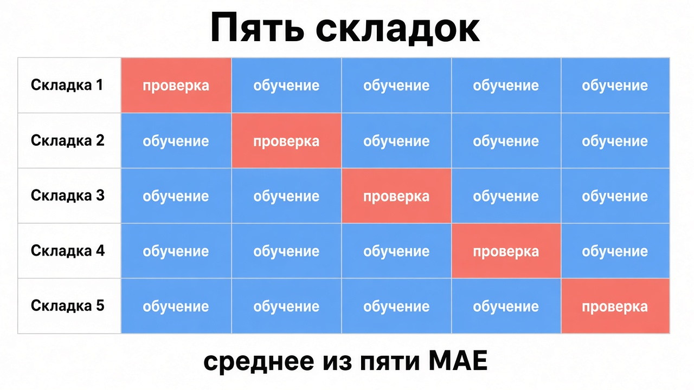

5. Кросс-валидация (Cross-Validation)
Более устойчивый способ проверить качество модели, чем один жребий 8000/2000.

Если открыли эту страницу отдельно от предыдущих, сначала выполните ячейку. Она заново читает flats_gaps.csv и делит таблицу так же, как на странице про пропуски: 8000 строк обучение, 2000 проверка, random_state=0. В ноутбуке путь module-7-0/data/flats_gaps.csv.
import pandas as pd
from sklearn.model_selection import train_test_split
from sklearn.ensemble import RandomForestRegressor
from sklearn.metrics import mean_absolute_error
from sklearn.impute import SimpleImputer
flats = pd.read_csv("module-7-0/data/flats_gaps.csv")
y = flats.price
X = flats.drop(columns=["price", "price_note", "flat_id"])
X_train, X_valid, y_train, y_valid = train_test_split(
X, y, train_size=0.8, test_size=0.2, random_state=0
)
num_cols = list(X_train.select_dtypes(include="number").columns)
X_train_num = X_train[num_cols].copy()
cols_with_missing = [col for col in num_cols if X_train_num[col].isna().any()]
До сих пор проверка была одним жребием: 2000 строк при random_state=0. Другой жребий дал бы другую MAE. Если разница двух моделей маленькая, можно выбрать ту, которой просто повезло с этими двумя тысячами.
Перекрёстная проверка делит все 10000 строк на 5 равных частей, их называют складками. Опыт повторяют пять раз. Каждый раз одна складка — проверка, остальные четыре — обучение. Каждая квартира ровно один раз попадает в проверку. Итог — пять MAE и их среднее.
Схема для пяти складок:
| Опыт | Обучение | Проверка |
|---|---|---|
| 1 | складки 2–5 | складка 1 |
| 2 | складки 1, 3–5 | складка 2 |
| 3 | складки 1, 2, 4, 5 | складка 3 |
| 4 | складки 1–3 и 5 | складка 4 |
| 5 | складки 1–4 | складка 5 |
Цена точности — пять обучений вместо одного. На 10000 строк это ещё секунды. Когда одно обучение идёт десятки минут, оставляют одно отложенное разбиение, как в занятии 6.0.
Здесь признаки только area, year, rooms. Тогда среднее по складкам можно сравнивать с импутацией из 7.0.1, а не с моделью, которая дополнительно видит район. Конвейер с SimpleImputer нужен обязательно: внутри каждой складки среднее должно считаться заново, только по её четырём обучающим частям. Если заполнить пропуски один раз до цикла, в среднее попадёт и та складка, которая сейчас считается проверкой.
Ячейка:
from sklearn.model_selection import cross_val_score
from sklearn.pipeline import Pipeline
cols_to_use = ["area", "year", "rooms"]
X_cv = flats[cols_to_use]
y_cv = flats.price
cv_pipeline = Pipeline(
steps=[
# Пустые года и комнаты. Среднее этот шаг пересчитает на каждой складке отдельно.
("preprocessor", SimpleImputer()),
("model", RandomForestRegressor(n_estimators=20, random_state=0)),
]
)
# cv=5 — пять складок.
# scoring="neg_mean_absolute_error": в sklearn все меры устроены так, что большее число лучше.
# Обычная MAE устроена наоборот, поэтому библиотека отдаёт её со знаком минус.
# Умножение на -1 возвращает привычную ошибку «на сколько промахнулись».
scores = -1 * cross_val_score(
cv_pipeline, X_cv, y_cv, cv=5, scoring="neg_mean_absolute_error"
)
print("MAE по складкам:", [f"{float(s):.2f}" for s in scores])
print(f"Средняя MAE: {float(scores.mean()):.2f}")
Критерий 7.0.4. Пять чисел: 339.98, 341.94, 344.85, 346.53, 330.90. Среднее — 340.84. Самая удачная складка и самая неудачная отличаются примерно на 16. Это меньше, чем выигрыш от района в разделе 7.0.2 (около 110) и меньше, чем выигрыш конвейера, который оставил и год, и район. Вывод «район полезен» от одного жребия не зависит.
Отдельные X_train и X_valid в этой ячейке не создают. cross_val_score делит таблицу сам.